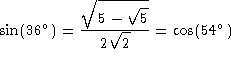

. Then
the edge lengths and the angles are related by (
. Then
the edge lengths and the angles are related by (  is the Greek letter
alpha)
is the Greek letter
alpha)
I will briefly review some of the relations used in plane trigonometry. If you are not familiar with these relations you should consult an introductory text on plane trigonometry.
The symbol `` '' is to be read as ``is defined to be''.
Consider the right triangle shown in the figure. The angle ACB is
. Then
the edge lengths and the angles are related by ( is the Greek letter
alpha)
sine of the angle 
cosine of the angle 
tangent of the angle
cotangent of the angle 

Because the triangle in the figure is a right triangle, the edges AC, BC, and AB obey Pythagoras' theorem.
For any angle  (Greek letter beta), where represents the second power of the sine function
and represents the second power of the cosine function. That
is
(Greek letter beta), where represents the second power of the sine function
and represents the second power of the cosine function. That
is
The inverse trigonometric functions are
The notation , and does NOT mean the same as in ordinary algebra. Whereas , . This can lead to serious mistakes if you do not realize that is just notation for the function.
Angles are given in either units of radians or units of degrees. In the following relation, is in units of radians and is in units of degrees.
To convert from one system of units to the other, solve the above equation for
the unknown quantity. For example, if we know that radians
and we want to know what this angle is in units of degrees, we solve for
 to get
to get
Note the use of the symbol ``'' which is read ``is approximately equal to''. It is important to know when a given number is exact and when the number is only an approximation. In Fuller's Synergetics books, Fuller does not always make it clear when the numbers he is reporting are exact and when the numbers are approximations. Therefore, you should be very careful when repeating or using any of the numbers which you read from the Synergetics books.
It can be shown that the trigonometric functions obey the following relations:


Of particular interest, note that
The angle is called the complement of angle
 . The angle is called the supplement
of angle
. The angle is called the supplement
of angle  .
.
The following table has been taken from Tables Of Integrals And Other Mathematical Data, 4th edition, by H. B. Dwight, Macmillan Pub. Co., 1961.

Usage Note: My work is copyrighted. You may use my work but
you may not include my work, or parts of it, in any
for-profit project
without my consent.